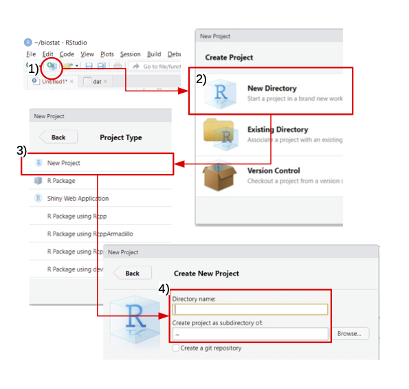
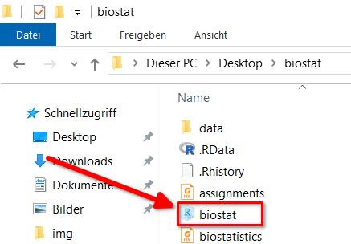
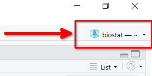

![]()

Übung Woche 1: Einführung in R
Vorbereitung (vor der Übung)
Installation
Für einen reibungslosen Ablauf in den Übungen laden Sie bitte die aktuelle Version von R (https://cran.r-project.org/) und RStuido herunter (https://posit.co/download/rstudio-desktop/). Falls Sie Probleme bei der Installation haben, melden Sie sich bitte bei mir.
Werden Sie aktiv
Überlegen Sie sich was der Unterschied zwischen R und RStudio ist?
Bei Publikationen ist es wichtig, dass Software richtig zitiert wird, um die Reproduzierbarkeit zu erhöhen.
Werden Sie aktiv
Recherchieren Sie, wie man R und RStudio richtig zitiert.
Wenn Sie noch nie mit R Studio gearbeitet haben, schauen Sie sich diese kleine Einführung an:
Datentypen
Wenn Sie noch nie mit R gearbeitet haben, lesen Sie bitte Kapitel 3 zu Variablen, Funktionen und Datentypen: https://github.com/Forest-Economics-Goettingen/KursskriptRBsc/blob/main/skript.pdf.
Übung
Einführung
Ziele
- Arbeiten mit Projekten in RStudio
- Arbeiten mit Paketen
- Einlesen von Daten
- Arbeiten mit Vektoren und
tibbles
Arbeiten mit Projekten in RStudio
Projekte in RStudio bieten eine einfache Möglichkeit Workflows zu vereinfachen. Dabei wird eine lokale Umgebung erstellt und alle Pfadnamen beziehen sich auf das Verzeichnis des Projekts und sie müsse keine absoluten Pfade angeben. Das hat unter anderem folgende Vorteile:
- Sie können Ihre R-Session direkt in dem Projekt starten.
- R-Projekte können zwischen unterschiedlichen Rechnern geöffnet werden, ohne dass der Pfad angepasst werden muss.
Erstellen eines Projektes
Zum Erstellen eines Projektes müssen folgende Schritte durchlaufen werden, diese sind in Abbildung 3 zusammengefasst.
- Gehen Sie zu
File > New Project .... - Wählen Sie
New Project. - Geben Sie einen Namen für das Projekt ein (z.B. den Namen einer Lehrveranstaltung) und ein neuer Ordner mit dem Projektnamen wird erstellt.
- Drücken Sie auf
Create Project.
Sobald ein Projekt einmal erstellt wurde, können Sie einfach wieder auf das Projekt-Icon klicken und das Projekt wieder öffnen.

Alternativ kann über File > Open Project in RStudio oder durch Auswählen des Projektnamens (siehe folgende Abbildung) geöffnet werden.

Arbeiten mit Paketen
Pakete sind Erweiterungen für R und enthalten fertige Funktionen, um mit Daten zu arbeiten. Anstatt alles selber zu programmieren, kann man die Funktionen aus Paketen nutzen. Damit man mit Paketen arbeiten kann, muss man sie einmalig installieren und vor dem Verwenden laden.
- Paket installieren (nur einmal nötig):
install.packages("<Name des Pakets>"). - Paket laden (bei jeder neuen Session):
library(<Name des Pakets>)
Beispiel
# Installieren eines Pakets
install.packages("ggplot2")
# Vor dem Verwenden
library(ggplot2)Arbeiten mit Vektoren und tibbles
Ein data.frame ist eine Tabelle in R:
- Zeilen = Beobachtungen (z. B. Personen, Messungen)
- Spalten = Variablen (z. B. Alter, Gewicht)
Jede Spalte enthält einen Datentyp, aber verschiedene Spalten können unterschiedliche Typen haben.
Tibbles sind eine moderne Variante von Data Frames (aus dem tidyverse): - bessere Anzeige - konsistenteres Verhalten
Wir erzeugen drei Vektoren (alle Vektoren sind gleich lang).
ids <- 1:3
anzahl_rehe <- c(120, 85, 203)
revier <- c("A", "B", "A")Daraus wird ein data.frame (Tabelle)
monitoring <- data.frame(
ID = ids,
anzahl_rehe = anzahl_rehe,
revier = revier
)Anzeigen der Tabelle:
monitoring ID anzahl_rehe revier
1 1 120 A
2 2 85 B
3 3 203 AEnige wichtige Funktionen, um mit data.frames zu arbeiten
# Erste Zeilen anzeigen
head(monitoring) ID anzahl_rehe revier
1 1 120 A
2 2 85 B
3 3 203 A# Anzahl Zeilen und Spalten
nrow(monitoring)[1] 3ncol(monitoring)[1] 3# Struktur (Datentypen)
str(monitoring)'data.frame': 3 obs. of 3 variables:
$ ID : int 1 2 3
$ anzahl_rehe: num 120 85 203
$ revier : chr "A" "B" "A"Zugreifen auf Daten in einem data.frame:
# Einzelner Wert: Zeile 1, Spalte 2
monitoring[1, 2][1] 120# Zugriff über Spaltenname (empfohlen)
monitoring[1, "anzahl_rehe"][1] 120# Ganze Spalte (zwei Varianten)
monitoring$anzahl_rehe[1] 120 85 203monitoring[, "anzahl_rehe"][1] 120 85 203# Mehrere Zeilen
monitoring[1:2, ] ID anzahl_rehe revier
1 1 120 A
2 2 85 B# Mehrere Spalten
monitoring[, c("anzahl_rehe", "revier")] anzahl_rehe revier
1 120 A
2 85 B
3 203 AMit dem $-Zeichen kann bei data.frames direkt auf eine Spalte zugegriffen werden. Diese Möglichkeit hat den Vorteil, dass R Studio den Spaltennamen automatisch ausfüllen kann. Beim Tippen werden mögliche Spaltennamen vorgeschlagen. Sie wählen den Vorschlag aus, in dem Sie Tabulator-Taste drücken. Danach können Sie diesen resultierenden Vektor wie einen einfachen Vektor behandeln und verarbeiten.
monitoring[monitoring$anzahl_rehe > 100, ] ID anzahl_rehe revier
1 1 120 A
3 3 203 AMit dplyr
dpylr ist ein eine Erweiterung von R (ein Paket), die das Ziel hat, den Umgang mit Daten einfacher und schneller zu machen.
dplyr definiert 5 Verben, um mit Daten zu arbeiten. Diese sind:
filterselectarragnemutatesummarise
Damit die Funktionen aus dplyr verwendet werden können, müssen wir als erstes das Paket dplyr laden. The online Resource R for Data Science gibt einen sehr guten, tieferen Eindruck in die Arbeit mit dplyr und erklärt auch die dplyr Philosophie noch Mal sehr genau für Beginner.
library(dplyr)Warning: package 'dplyr' was built under R version 4.5.2
Attaching package: 'dplyr'The following objects are masked from 'package:stats':
filter, lagThe following objects are masked from 'package:base':
intersect, setdiff, setequal, unionSollte dies zu einer Fehlermeldung führen, dann müssen Sie das Paket dplyr erst installieren. Dafür müssen Sie einmalig install.packages("dplyr") installieren.
dplyr stellt unterschiedliche Funktionen zum Arbeiten mit Daten zur Verfügung. Es gibt fünf Grundfunktionen für die am häufigsten vorkommenden Operationen. Mit der Funktion filter() können unterschiedliche Beobachtungen gefiltert werden:
monitoring |> filter(anzahl_rehe > 100) ID anzahl_rehe revier
1 1 120 A
2 3 203 AEine weitere Funktion aus dem Paket dplyr ist select(). Damit können Spalten aus einem data.frame ausgewählt werden. Dabei können auch die Spaltennamen unbenannt werden.
monitoring |> select(anzahl_rehe) anzahl_rehe
1 120
2 85
3 203monitoring |> select(n = anzahl_rehe) n
1 120
2 85
3 203monitoring |> select(-anzahl_rehe) ID revier
1 1 A
2 2 B
3 3 AMit der Funktion arrange() können die Beobachtungen in einem data.frame sortiert werden.
monitoring |> arrange(anzahl_rehe) ID anzahl_rehe revier
1 2 85 B
2 1 120 A
3 3 203 AMit der Funktion mutate() kann man eine neue Spalte hinzufügen.
monitoring |> mutate(m = mean(anzahl_rehe)) ID anzahl_rehe revier m
1 1 120 A 136
2 2 85 B 136
3 3 203 A 136Mit der Funktion summarise() können Spalten zusammengefasst werden.
monitoring |> summarise(
mean = mean(anzahl_rehe)
) mean
1 136
Merke
- data.frame = Tabelle (Zeilen + Spalten)
- Zugriff mit
[Zeile, Spalte]oder$ dplyrmacht Code lesbarer und einfacher
Einlesen von Daten
Oft bekommen Sie Daten aus Felderhebungen, Sensoren oder sonstigen Quellen. Diese Daten müssen dann in R eingelesen werden. Daten liegen meist in einer tabellarischen Form und als Textdatei vor1.
Die Funktion read.table() erlaubt es eine Textdatei in R einzulesen. Dabei sind fürs Erste drei Argumente wichtig:
file: Der Pfad zur Datei die eingelesen werden soll. Dieser kann absolut oder relativ sein. Ein absoluter Pfad gibt den Ort der Datei, die gelesen werden soll, komplett an (auf einem Windows Rechner wäre das wahrscheinlichC:/Users/...). Im Gegensatz dazu gibt ein relativer Pfad den Ort an, an dem die Datei, die eingelesen werden soll, relativ zum aktuellen Arbeitsverzeichnis (working directory) von R an. Man kann das Arbeitsverzeichnis von R mit der Funktionsetwd()setzen, es hat sich jedoch als sinnvoller erwiesen mit R Studio-Projekten zu arbeiten. Sie müssen den Pfad dann nur ab dem Ordner eintippen, in dem das Projekt liegt.header: Dieses Argument gibt an, ob die erste Zeile eine Kopfzeile mit den Spaltenüberschriften ist. Meist haben wir eine Kopfzeile, dann wäreheader = TRUErichtig.sep: Das Trennzeichen zwischen verschiedenen Spalten. Es ist meist ein Leerzeichen (), Komma (,) oder Strichpunkt (;).
Die Datei fotofallen_uni_goe.csv finden Sie auf StudIP und kann einfach heruntergeladen werden. Sie können sich die Datei mit jedem Texteditor oder auch mit Excel oder Libre Office ansehen. Die Datei kann mit dem folgenden Befehl in R eingelesen werden. Hier wurde die Datei in einem R Studio-Projekt in ein Unterverzeichnis daten abgelegt.
dat <- read.table(here::here("daten/fotofallen_uni_goe.csv"),
header = TRUE, sep = ",")
head(dat, n = 3) standort_id gattung art name zeit
1 2 <NA> <NA> Blank 2021-10-09T09:07:43Z
2 2 <NA> <NA> Blank 2021-10-11T14:47:48Z
3 1 <NA> <NA> Blank 2021-10-03T06:38:02ZEs gibt viele Varianten der Funktion read.table(). Beispielsweise hat die Funktion read.csv() bereits die Argumente sep = ',' und header = TRUE gesetzt. Die Funktion read.csv2() hat die in Deutschland üblichen Argument sep = ';' und dec = ',' gesetzt. Sie müssen natürlich darauf achten, dass sie die csv Dateien mit den gleichen Spezifikationen einlesen, mit denen sie gespeichert wurde. Siehe dazu auch die Hilfeseite von read.table().
Mit der Funktion write.table() kann ein data.frame auf die Festplatte geschrieben werden.
Aufgabe 1: Fotofallen
Im Rahmen des Projektes Snapshot Europe wurde ein Kamerafallenmonitoring im Göttinger-Umland durchgeführt. Für an 14 Standorten wurde für zwei Monate eine Fotofallen ausgebracht. Die bereits klassifizierten Daten dafür finden Sie in der Datei daten/fotofallen_uni_goe.csv.
Etwas Hintergrund zum Arbeiten mit R finden Sie im Kursskript zu der Veranstaltung: “Einführung in die Datenanalyse mit R”. Das Skript ist hier (https://github.com/Forest-Economics-Goettingen/KursskriptRBsc/blob/main/skript.pdf) hinterlegt.
Aufgaben:
- Lesen Sie den Datensatz
daten/fotofallen_uni_goe.csvin R ein. - Wie viele Fotos wurden in diesem Zeitraum erhoben?
- Wie viele Standorte finden Sie in dem Datensatz (Spalte
standort_id). - An welchem Standort wurden am meisten Fotos aufgenommen?
- An welchem Standort wurden am meisten Rehe fotografiert?
- Finden Sie alle Standorte, an denen mindestens einmal ein Reh fotografiert wurde.
- Welche Tierart kam am häufigsten vor?
Wenn Sie denken, dass Sie fertig sind, machen Sie das bitte hier kenntlich: https://particify.rz.tu-bs.de/p/24387363/series/%C3%9Cbungen/1.
Lösungsvorschläge
Lösung anzeigen
library(tidyverse)
# a. Lesen Sie den Datensatz `daten/fotofallen_uni_goe.csv` in R ein.
dat <- read_csv(here::here("daten/fotofallen_uni_goe.csv"))
# b. Wie viele Fotos wurden in diesem Zeitraum erhoben?
nrow(dat)
# c. Wie viele Standorte finden Sie in dem Datensatz (Spalte `standort_id`).
length(unique(dat$standort_id))
# d. An welchem Standort werden am meisten Fotos aufgenommen?
dat %>% count(standort_id) %>% arrange(-n)
# e. An welchem Standort wurden am meisten Rehe fotografiert?
unique(dat$name)
dat %>% filter(name == "European Roe Deer") %>%
count(standort_id) %>% arrange(-n)
# f. Finden Sie alle Standorte, an denen mindestens einmal ein Reh fotografiert wurde.
dat %>% filter(name == "European Roe Deer") %>%
count(standort_id) %>% filter(n > 0)
# g. Welche Tierart kam am häufigsten vor?
dat %>% count(name) %>% arrange(-n)Nachbereitung (nach der Übung)
Stellen Sie sicher, dass sie Ordner mit deinem R-Studio Projekt für diese Veranstaltung haben. Z.B. C:/users/jsigner/uni/master/2-semester/erfassung-und-monitoring-von-wilditeren/. In diesem Verzeichnis sollten sie mindestens zwei weitere Ordner haben: 1) daten für alle Daten für diesen Kurzs und 2) skirpte darin legen Sie die Skripte ab.
Im Ordner daten sollten Sie eine Datei haben fotofallen-uni-goe.csv und im Ordner skripte eine weitere Datei. Diese könnte z.B. mit uebungen-einheit-1.R benannt sein.
Falls Sie noch schwierigkeiten mit Projekten haben, schauen Sie sich nochmals dieses Video an:
Fußnoten
Natürlich gibt es viele weitere Formate wie Daten vorliegen können, diese werden aber an dieser Stelle nicht weiter behandelt, aber siehe z.B. das Paket
readxlfür Daten von MS Excel.↩︎